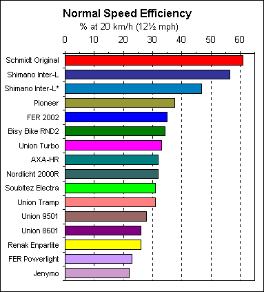

by Chris Juden, based upon data from tests performed at Wilfried Schmidt Maschinenbau, Tübingen, Germany.
Table of Contents As Wilfried Schmidt is himself a designer and manufacturer of cycle lighting generators, you might suspect a degree of bias. To ensure that this should not occur, the tests were independently audited by a professional engineer (and Munich cycle dealer): Thomas Metzmacher. And by the time you read this, articles based on the same data will also have appeared in VeloPlus (Switzerland) and Radwelt (magazine of the ADFC - German CTC equivalent).
Wilfried's colleague Andreas Oehler sent the 'raw data' for me to check and I also questioned him closely regarding the details of the test method. I found that they had been so careful not to favour their own product that they were indeed a little unfair to it. Wheel drag was not subtracted for this and other integral hub generators. It's a small effect, but I have corrected for it anyway (see Test Method for details) so that all types of generator are compared in a similar way: this being purely upon the basis of extra effort, above that normally required to propel a bicycle. For this reason our figures are slightly different to those already published in other magazines.
The most common type of generator needs no introduction: it looks like and is called a bottle. It drives off the side of the tyre and is usually mounted with the drive pulley in front of the mounting. Forward facing is assumed when designating a left or right-handed model, although a left handed generator may also be mounted facing backwards on the right-hand-side of the bicycle, and vice versa. For this test bottle generators were always mounted to drive forwards.
There are two classes of bottle: which differ in the way they move the pulley towards the tyre. One type tilts over, pivoting about an axis at right angles to its centre-line. For this tilting design, drive direction usually makes no difference to performance. But when a hinged type - which swings like a door about a parallel axis - is mounted backwards, contact pressure invariably increases. This may reduce the chance of pulley slip but also increases drag.
Bottles are simple, cheap and more efficient than most people will credit. However they are a bit prone to slip in wet conditions. This can generally be avoided by careful adjustment and appropriate choice of tyre, but may be harder to eliminate on oily urban main roads.
Roller generators are known as bottom-bracket type in Britain, but not by foreigners: who cunningly find other (less dirty) places to mount a roller. Anyway: the generator is itself the roller, driven by contact with the centre tread of the tyre. rollers
Rollers need a high contact pressure to work in the rain, because water centrifuges out to this part of the tyre and is channelled onto the roller by the rear mudguard. They are nevertheless preferred by those who want to site their generator inconspicuously. There is also a belief that the larger diameter (compared to the common bottle-type pulley) must reduce drag. Noise is certainly reduced, not least by intervening parts of the bike and the riders body. But all is not as it may seem or sound!
Putting the generator in or on the hub eliminates drive uncertainties. And a desire for reliability has spawned many designs of integral hub and hub-driven generators. These can be classified in two ways. They either turn with the hub, or are geared (with gears or belts) so as to boost the rotational speed of the generator. And they are either fixed to turn all the time, or are clutched, so that the generator may be disengaged when lights are not required. Ungeared hubs need lots of magnetic poles to compensate for the slow rotational speed, but these do not necessarily weigh any more than gears etc. Gears are less efficient too, so geared hubs are usually clutched to eliminate residual drag and unnecessary wear.
People often ask me to recommend a powerful dynamo, but as you can see from the graph, they are mostly the same in this respect. This isn't surprising when you consider that they are all intended to power the same 6 volt, 3 watt lighting set (invariably split 2.4W front, 0.6W rear). Differences occur mainly above the 3 W level. But even these are hardly sufficient to be noticed in the brightness of your lights, so I wouldn't blame you for skipping the next few paragraphs and going directly to something more interesting!
In other words all generators are equal, but some are more equal than others. And you do not really want your generator to be 'more equal', since burning them brighter than intended can significantly damage the health of your bulbs. Thankfully, modern halogen headlamps include Zener diode voltage limiters. So did the test load. But these are not simple on/off devices. They leak power over a range of voltages so your bulbs may still get a bit cooked by an over-powerful generator, especially if you are a speedy rider.
It's worth noting that dynamo lighting is optimised for the mass of ordinary utility riders and made to pass German standards - which demand that a generator reaches 95% of its rated output by 15km/h (a mere 9mph). The British cycling scene is entirely different to the rest of Northern Europe. Here dynamo lighting is the province of cycling enthusiasts. Not all but most of them probably ride a good deal faster than the average German housewife; and such enthusiasm can play havoc with bulb life, generator over-heating etc. Some keen types fit over-sized pulleys (home-made or bodged) to equate their miles per hour with Frau Radler's kilometres, also reducing the drag and often improving traction. (You should at least fit a pulley cap.) Paradoxically the less powerful models are often preferable, but the differences shown here are in any case quite small. I wouldn't worry much up to about 4 watts.
Possible exceptions are the Bisy Bike RND2 (to be avoided by speed merchants), the Union 9501 Roller (a good one for slower riders) and the Jenymo (which is a special case that I'll not go into here).
Everyone (who doesn't use one) complains that dynamos slow you down. Well okay, of course they do, but I suggest that the slowing down has more to do with psychology than the actual power required to turn it. It takes energy to make a noise, your energy. Add the lowering tone (eee becomes urrr) as speed drops on a hill and it becomes hard not to believe this morale sapping device is responsible blame for the pain in your legs and the sweat on your brow!
There have been some crude and nasty ones, but the drag of any decent modern generator is rather insignificant. This is especially so at low speed and compared to the resistance afforded by any recognisable hill. But no one wants to work any harder than they have to. This makes Generator Drag an interesting subject. And striking differences in power input make this a much more interesting graph. Take a look at it now. You'll see that I've also plotted the amount of extra effort for a 75kg person to ride a 15kg bicycle up hills of various gradients, over and above that required on a flat road.
I wrote hills but you can hardly call them that. All of the generators were easier to turn than riding up a 1 in 300 slope. Another way of putting that is a rise of 18 feet per mile; and there's quite a cluster of sidewall and hub-driven models around the 1/500 line, or 10 ft per mile. If that's a hill I'm a Dutchman! Let's put this into another context. Our 90kg (total) cyclist must produce about 70W to maintain 20 km/h on the flat. If he turns on his dynamo he needs another 6W minimum, 14W maximum. He can work a bit harder or slow to 19 km/h, 18 minimum. Now that's not too bad is it?
For those who simply must have the least drag possible: 1/1000 (6 fpm) is achieved by the two best hub generators. Both of these, and one other hub-mounted model, are of the fixed type. This means that the generator cannot be disengaged and always turns with the wheel. So there is always some extra drag - relative to that of a normal wheel - even when the lights are switched off. This residual drag is also shown by dashed lines on the graph. It's generally much less than when electricity is flowing in the generator (for if it's doing no work it should take less work to turn it) and in Schmidt's Original the residual drag amounts to less than one foot of climbing per mile. Feel that and it is you who must be the Dutchman!
Residual drag is not so well controlled by Shimano and Pioneer. Indeed: above a certain speed (23 and 37 km/h respectively) their generators become easier to turn with the lights switched on again! (I can only speculate that this may be due to inefficient eddy currents in their armatures, which are perhaps not laminated.) But note nevertheless, that they demand less effort than to climb 7 feet per mile.
To make it easy for you to compare the models tested, and decide which one best meets your requirements, I've produced three charts that rate them best at top, worst at bottom, in three distinct performance criteria.
As it says, this is the power output at 10 km/h (6¼ mph). That's the kind of speed an average rider gets down to on a steep hill. An elderly or disabled rider might often be reduced to such a low speed by an incline or headwind. And it may difficult to ride much faster on some cycle paths, where poor surfaces, sightlines and obstacles make a good light all the more important! If plenty of power at low speed is a priority for your kind of cycling, choose one of those near the top of this list. But if you don't have energy to spare, also give a thought to Efficiency.

This is the chart for the average touring and commuting rider. It rates generators for the best trade-off between maximum light and minimum effort, at 20 km/h (12½ mph). Frequent cyclists, (not super-athletes) generally tootle along at about that speed. They should go by this chart, especially if they do a lot of riding in the dark. But also pay attention to High Speed Drag.
There's not much point in having a more efficient generator if that means more electrical power for the same drag. Excess power simply blows your bulbs. And since there's nothing wrong with the output of most of the models we've looked at, minimum input is a far more interesting proposition. This is especially true for fit, high-speed, long distance riders. If you often get up to 30 km/h (19 mph) this is your chart.
Note that this chart also includes the residual (lights off) drag for fixed hub generators. These can be switched off electrically but still turn with the wheel. They are rated according to the sum of generating plus residual drag (the latter being zero for other types). This represents a journey half in the dark and half in daylight. The more you ride in daylight - at any speed - the less residual drag you will want, so consult this chart if you're contemplating a fixed hub generator.
Hinged type bottle generator (recommended in CTC mag p28 A/M 93). First modern high-efficiency design and still one of the very best thanks to a large diameter, knurled and hardened steel roller. My benchmark for comparison with other models and types of generator. Early versions suffered from seized bearings due to corroded rotor shafts but these are now stainless. Has a very strong pressure spring, seldom slips, but may exert too much contact pressure when mounted backwards. Incorporates zener overload protection and has neat, separate electrical connections.
Geared integral hub generator previously produced under the name of S'Light (reviewed in CTC mag p24 D/J 96). Epicyclic gearing can be de-clutched for free running, but proved unreliable: few surviving one season of regular use. The '2' indicates that this may be a new improved version. The data shows it to be more efficient than the AXA at low speed, but no better than the average bottle at normal to high speed. Large diameter and quite heavy.
Latest version of this unique, hub-driven generator that fits neatly onto the side of an existing front wheel. (Reviewed in CTC mag p33 F/M 92) Clutched by flipping a lever into the spokes and geared by internal toothed belts. It can easily be fitted - to anything from a racer to a mountain-bike - and the data show it to be one of the easiest of all to propel. Although it has attractions to high-speed and long-distance riders, experience with the first (GS2000 and 2001) versions indicate problems with heat-induced distortion of the plastic body, resulting in misalignment, stripped teeth and broken belts. Few problems are reported by slower, short-distance riders; and the 2002 can at least be dismantled for maintenance.
Ordinary hinged type bottle generator from FER. A recent design but with the highest drag and lowest output of its type. Users report poor durability from FER bottles (plastic bodied ones anyway) so not recommended.
Unique Swiss-made bottle with integral back-up battery (keeps the lights on for up to 10 minutes when you stop) that is continuously charged by the generator. Measurements were made with this battery fully charged, to minimise the effect on output of this self-charging feature. However it is probably unfair to compare its output and efficiency with simple generators, since the charging circuit is sure to consume some power. Many would consider lower output when moving to be a fair exchange for continued output when stationary. Drag is similar to the average tyre-driven generator. The Jenymo is a hinged type, only a little larger than an ordinary bottle (it weighs 180g) and fits to the same kind of bracket. Unfortunately this product does not appear to be available in the UK.
This Danish company (say it Marvi) have bought Soubitez and Union, so there are several products below that may have this name instead when you see them in the shops.
Old-fashioned bottle generator, but quite efficient and very quiet thanks to the rubber drive ring. It's the tilting type, was reviewed in the CTC mag (p33 A/S 95) and is sold in our shop. It was tested as supplied with a small (22 mm o.d.) ring. The alternative steel pulley is similar and both are sized to maximise output at 15 km/h, as required by German regulations. The replacement rubber ring is larger (26 mm), improves traction and should reduce drag by at least 15%. This is recommended for use by normal/faster riders, for whom the reduction in output is a benefit rather than a drawback. Performance with this larger ring is probably very similar to the AXA. The Nordlicht is more reliable than most bottles: the metal body helps it to withstand prolonged high-speed running.
This new hub-mounted generator (mentioned in CTC mag p39 D/J 97) mounts on a rear Shimano freehub. The output is standard 6V, 3W, but it is mainly intended to be used with its dedicated lighting system. Although it's quite efficient when generating, it cannot be de-clutched and still exerts significant drag when it isn't. But the effects of drag should not be exaggerated (this one will slow you only by about 5%) and some may nevertheless appreciate the high-tech features (lights come on automatically when it gets dark) of the system as a whole.
Very compact integral, geared, clutched hub generator mentioned in CTC mag p39 D/J 97. Arc Marketing sent me a sample last year and I was not initially impressed: drive engagement was sticky and the three tiny epicyclic gear trains made a discouraging din. However: after a lengthy running in period it has not worn out (as expected), seems less noisy and perhaps somewhat easier to propel. This test shows that while it is not especially efficient, drag is comparable with a good bottle and of course it is not affected at all by the weather. Could be worth a second look if it becomes available in the UK.
Schmidt Original Best in TestUngeared, integral hub generator: the dynohub concept brought up to date. It comes complete with a modified headlamp to switch off the lights. You may know of the Union Wing (recommended in CTC mag p34 O/N 96 - now discontinued). This is essentially the same thing, taken back and further improved by it's original inventor, e.g. by fitting better bearings. These are inaccessible, but the manufacturer guarantees to take care of any problems. And although this model is not at the top of every table (e.g. some other generators slightly exceed its output at low speed), it's clearly best in test. So it should be, it costs the most! Without Shimano the Schmidt Original stands head and shoulders above the competition. And against Shimano it has the advantage of extremely low residual drag. By my reckoning it knocks only ½% off your average speed. These characteristics will be especially appreciated by Audax and other long-distance, high-speed riders. If you want the best, the Schmidt Original is now available from the CTC shop. |
Another ungeared integral hub generator, but at a keen price (about £55). The Inter-L is a very close competitor for the Schmidt Original, indeed it has slightly less generating drag above 28 km/h. Its only fault is that drag is hardly reduced by turning off the lights. Indeed: if you want to ride faster than 23 km/h (14 mph) you had better keep them on! The effect of this drag should not however be exaggerated. It's like a gradient of merely 1 in 900 and reduces speed by less than 4%. This will not be noticed by most riders, who may nevertheless appreciate its reliability and user-serviceable bearings.
Instead of a modified lamp: Shimano supply a handlebar-mounted switch to which you can wire any standard dynamo lighting. This switch also contains a Zener regulator to protect the lamps from excess power. It cuts in at a lower voltage than the regulator you generally get inside a halogen headlamp, reducing power output even at slow speeds and resulting in a lower efficiency score.
Modern, stylish design of bottle generator (hinged type) from this well known French manufacturer. Slightly lower than average output, but less drag than most makes it a competent performer. I've always got value for money out of Soubitez, so it's probably a sound choice especially for speedy riders on a budget.
If you must stick your generator under the bottom-bracket, I used to reckon this is the only one worth having. But it's heavier, more expensive, less efficient and on average less durable than a bottle, so you really should reconsider the options. The 8601 is operated via a cable and lever on the seat-tube, so you can easily reduce drag by turning it off.
New, more compact design of roller from Union, also known as the Maus (mouse) - probably because of the way it runs along the top of the tyre. You can get it neatly combined with a headlamp to fit in front of the fork crown. It has excellent output characteristics, but is just as draggy as the 8601.
Ordinary bottle generator from the ubiquitous German. Comes a few places behind its more costly stablemate in the rankings, but actual performance figures are very close. Excellent value for money. Why pay more?
Ultra-compact, highly efficient and good-looking bottle generator. Got a dud when reviewed for CTC mag (p33 O/N 96 and p42 F/M 97), but feedback from members is much more encouraging. It's the tilting type so shouldn't be affected by drive direction. However, some report a tendency to slip when mounted backwards, probably due to the pivot sticking when pushed this way. A bit noisy but performance is on a par with the AXA-HR. One of the best bottles.
More bike and light articlesA special testing machine was built, upon which a wheel and any known type of cycle lighting generator could be mounted. The cycle wheel was coupled to a large (30 kg) flywheel and accelerated by an electric motor to maximum speed. Then the motor was disengaged and speed monitored by computer as the wheel was retarded (mainly) by the generator. The computer was programmed to calculate the rate of deceleration and the power consumption (having first measured the inertia of the flywheel and bicycle wheel by a pendulum method) over a range of speeds.
Calibration tests were also conducted without a generator, and without even a cycle wheel on the rig. From these the aerodynamic and bearing drag of the flywheel and cycle wheel could be calculated, and subtracted as appropriate from the test data. Whilst bearing friction (in the cycle wheel and test machine) should be relatively small, spokes act like a centrifugal fan, producing significant aerodynamic drag even when a wheel is not moving forwards. (Disk wheels may be especially recommended for roller racing!) All these factors were found to be much less than generator drag, which could therefore be calculated with adequate accuracy.
The computer also monitored electrical output during tests with the generator running. Cycle light bulbs etc. are insufficiently reliable for test purposes, so voltage was measured across a high quality 12 ohm resistor (1%, 50W) with parallel 7.8 volt Zener diodes (BZW7V8B). These components model the usual kind of 6V, 3W dynamo lighting system, with which all the generators tested were intended to be used.
Because they are less than 100% efficient, generators get warm during use. This alters their electrical and mechanical properties; so each was run for 5 minutes at 15 km/h before accelerating to 50 km/h for the 'coast down' test.
A programme of pre-testing investigated warming up and other factors. The most important variable emerging from this programme was pulley pressure. The Union 8601 Roller presses especially hard against the tyre with a force of about 20 Newtons (N). When this was reduced to 10 N by means of an external spring, drag was cut by about one third. Old, used roller generators are more efficient because their old springs don't press so hard, but of course then they slip in the rain.
During the main tests all sidewall (bottle) generators were mounted with an off-gap of 10 mm, which generally resulted in a contact pressure (when engaged with the tyre) of about 10 N, while roller generators were positioned at a distance half-way between just touching when on and off respectively - so as to produce a pressure midway between the minimum and maximum obtainable. Note that the official German Standards test differs by prescribing a 10 N pressure, which makes models with strong springs look much more efficient than they typically are. Such official results (however misleading) tend get quoted in catalogues etc.
At least three samples of each model were tested. Rather than average the results, Andreas took those provided by the 'most typical' sample - with a performance that lay between the extremes of its namesakes.